Objectives
1. Exploratory data analysis: Conduct a thorough analysis of
real-time financial data to identify patterns and trends.
2. Data visualisation: Utilise visualisation techniques to
present stock information effectively, aiding in the
interpretation of market dynamics.
3. Predictive modelling: Implement models to forecast stock
movements and calculate Value at Risk (VaR).
Scope
This project focuses on examining 4 prominent technology stocks
i.e. Apple Inc. (AAPL), Amazon.com Inc. (AMZN), Alphabet Inc.
(GOOG), and Microsoft Corporation (MSFT). The analysis spans a
one-year period, from 28th January, 2023, to 28th January, 2024,
covering 252 trading days.
Project outline
The project begins with importing libraries and loading stock
data for the aforementioned companies (Section 2). Then in
Section 3, we will be conducting some basic analysis of the
stock performance, covering closing prices, trading volumes,
moving averages, and daily returns. Section 4 - 'Risk Analysis -
Value at Risk' - explores historical, parametric, and Monte
Carlo approaches to computing a stock's Value at Risk. The
project concludes with some potential areas for improvement in
future projects.
1. Loading data
import numpy as np
import pandas as pd
import seaborn as sns
from IPython.display import display
import matplotlib.pyplot as plt
from datetime import datetime
import yfinance as yf
from scipy.stats import norm
import warnings
warnings.filterwarnings("ignore")
sns.set_style('white')
%matplotlib inline
end_date = datetime.now()
start_date = datetime(end_date.year - 1, end_date.month, end_date.day)
stocks = ['AAPL', 'AMZN', 'GOOG', 'MSFT']
company_colours = {'AAPL': '#7c0000', 'AMZN': '#E19A00', 'GOOG': '#25330F', 'MSFT': '#042D29'}
for stock in stocks:
globals()[stock] = yf.download(stock, start=start=start_date, end=end_date)
display(AAPL.head(2)), display(AMZN.head(2)),
display(GOOG.head(2)),
display(MSFT.head(2))
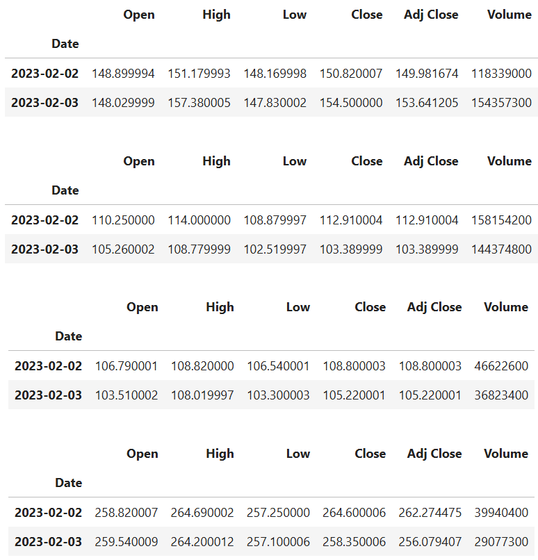
2. Basic analysis of stock
information
plt.figure(figsize = (10.5, 3))
for i, stock_symbol in enumerate(stocks, start = 1):
df = globals()[stock_symbol]
sns.lineplot(data = df['Adj Close'], color = company_colours[stock_symbol], label = stock_symbol, linewidth = 1.5)
plt.xlabel('Date')
plt.ylabel('Adjusted closing price')
plt.title('Historical adjusted closing prices');
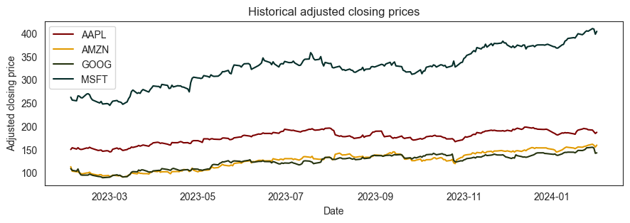
During the observed period, Microsoft (MSFT) consistently
demonstrated higher adjusted closing prices compared to the other
stocks, reaching its peak on 2023-11-16 at 376.17. Apple (AAPL)
followed suit, achieving a stable adjusted closing price of 182.09
on 2023-11-16. On the other hand, Google (GOOG) and Amazon (AMZN)
exhibited similar adjusted closing price trends, converging on
2023-11-16 with Google at 138.70 and Amazon at 3634.05. This
parallel movement indicates a comparable performance between Google
and Amazon.
fig = plt.subplots(nrows = 2, ncols = 2, sharey = True, sharex = True, figsize = (10.5, 4))
plt.suptitle('Historical trading volume')
for i, stock_symbol in enumerate(stocks, start = 1):
df = globals()[stock_symbol]
plt.subplot(2, 2, i)
sns.lineplot(data = df['Volume'], color = company_colours[stock_symbol], label = stock_symbol, linewidth = 1.5)
print(f'Average trading volume (trailing 12 months) for APPLE: {df['Volume'].mean():.0f} shares.')
Average trading volume (trailing 12 months) for APPLE: 57859731 shares.
Average trading volume (trailing 12 months) for APPLE: 56256391 shares.
Average trading volume (trailing 12 months) for APPLE: 25066624 shares.
Average trading volume (trailing 12 months) for APPLE: 27007968 shares.
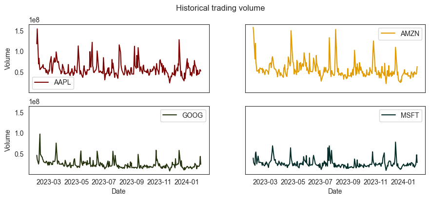
In terms of the volume of shares traded during the period from
February 2, 2023, to February 1, 2024, Apple and Amazon emerged as
standout performers, surpassing Microsoft and Google by almost twice
the trading volume.
Moving average (MA) is a widely metric used to effectively
diminishes price volatility by filtering out random fluctuations.
AAPL['MA 10 days'] = AAPL['Adj Close'].rolling(window = 10).mean()
AAPL['MA 20 days'] = AAPL['Adj Close'].rolling(window = 20).mean()
AAPL['MA 50 days'] = AAPL['Adj Close'].rolling(window = 50).mean()
plt.figure(figsize = (10.5, 3))
sns.lineplot(data = AAPL['MA 10 days'], color = '#7c0000', label = '10-day MA', linewidth = 1.5)
sns.lineplot(data = AAPL['MA 20 days'], color = '#E19A00', label = '20-day MA', linewidth = 1.5)
sns.lineplot(data = AAPL['MA 50 days'], color = '#25330F', label = '50-day MA', linewidth = 1.5)
plt.title('Moving averages for APPLE stock')
plt.xlabel('Date')
plt.ylabel('Adjusted closing price');
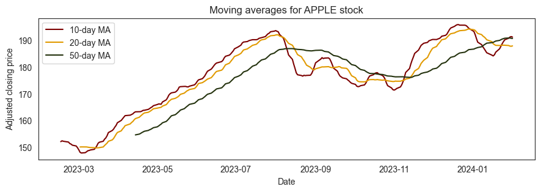
fig, axes = plt.subplots(nrows=2, ncols=2, sharex=True, figsize=(10.5, 4))
plt.suptitle('Moving averages (trailing 12 months)')
plt.xlabel('Date')
for i, stock_symbol in enumerate(stocks, start=1):
df = globals()[stock_symbol]
df['MA 10 days'] = df['Adj Close'].rolling(window=10).mean()
df['MA 20 days'] = df['Adj Close'].rolling(window=20).mean()
df['MA 50 days'] = df['Adj Close'].rolling(window=50).mean()
plt.subplot(2, 2, i)
sns.lineplot(data=df['MA 10 days'], color='#7c0000', label='10-day MA', linewidth=1.5)
sns.lineplot(data=df['MA 20 days'], color='#E19A00', label='20-day MA', linewidth=1.5)
sns.lineplot(data=df['MA 50 days'], color='#25330F', label='50-day MA', linewidth=1.5)
plt.ylabel(f'{stock_symbol} close')
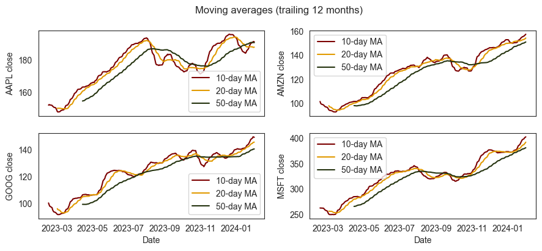
Now that we've completed some initial analysis, let's focus on
assessing the stock's risk. To achieve this, I'll examine the daily
variations in the stock, rather than solely its absolute value.
Let's use Apple stocks (AAPL) as an example.
AAPL['Daily Return'] = AAPL['Adj Close'].pct_change()
plt.figure(figsize = (10.5, 3))
sns.lineplot(data = AAPL['Daily Return'], color = company_colours['AAPL'])
plt.title('Daily returns of APPLE stock')
plt.xlabel('Date')
plt.ylabel('Return');
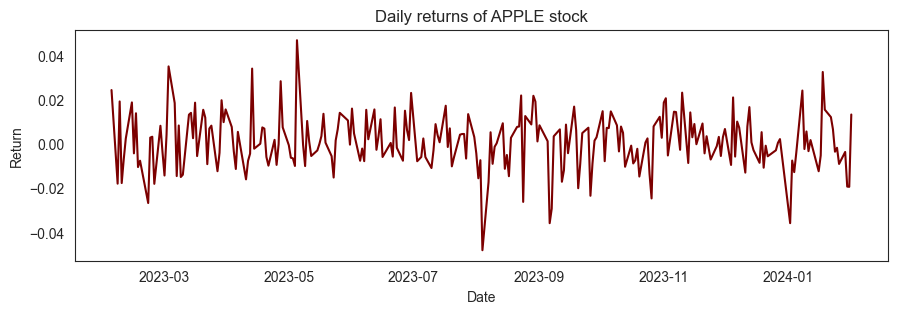
Now let's get an overall look at the average daily return using a
histogram. We'll use seaborn to create both a histogram and kde plot
on the same figure.
plt.figure(figsize = (10.5, 3))
sns.histplot(data = AAPL['Daily Return'], alpha = 1, color = company_colours['AAPL'], kde = True)
plt.title('Daily returns of APPLE stock')
plt.xlabel('Return');
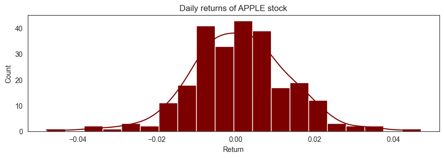
all_close = pd.concat([AAPL['Adj Close'], AMZN['Adj Close'],
GOOG['Adj Close'], MSFT['Adj Close']], axis = 1)
all_close.columns = ['AAPL', 'AMZN', 'GOOG', 'MSFT']
display(all_close)
Now, we can assess the correlation by comparing the daily returns of
the two stocks.
sns.jointplot( data = all_close, x = 'AAPL', y = 'AMZN', alpha = 1, color = '#7c0000', height = 5);
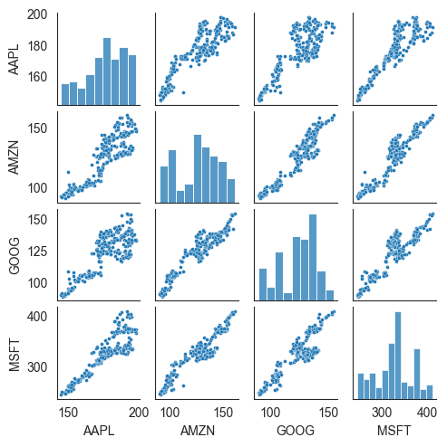
Finally, we could also do a correlation plot, to get actual
numerical values for the correlation between the stocks' daily
return values.
sns.pairplot( data = all_close, plot_kws = {'s': 8}, height = 1.245);
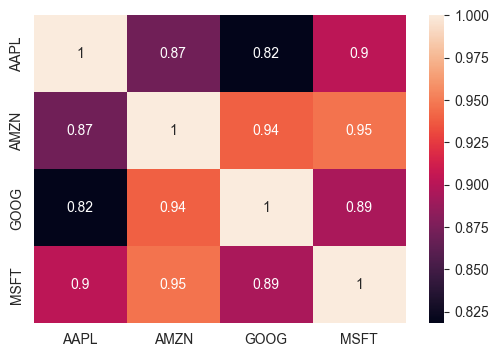
We've done some daily return analysis, let's go ahead and start
looking deeper into actual risk analysis.
3. Risk analysis - Value at Risk
Historical approach
Let's proceed to establish a value at risk parameter for our stocks.
We can consider value at risk as the sum of money we might
anticipate losing (also known as putting at risk) within a specified
confidence interval.
all_returns = all_close.copy()
for column in ['AAPL', 'AMZN', 'GOOG', 'MSFT']:
all_returns[column] = all_returns[column].pct_change()
display(all_returns)
fig = plt.subplots(nrows = 2, ncols = 2, sharex = True, figsize = (10.5, 4))
plt.xlim(left = -0.1, right = 0.1)
plt.ylabel('Count')
for i, stock_symbol in enumerate(stocks, start = 1):
plt.subplot(2, 2, i)
plt.title(f'{stock_symbol} shares')
sns.histplot(data = all_returns[stock_symbol]
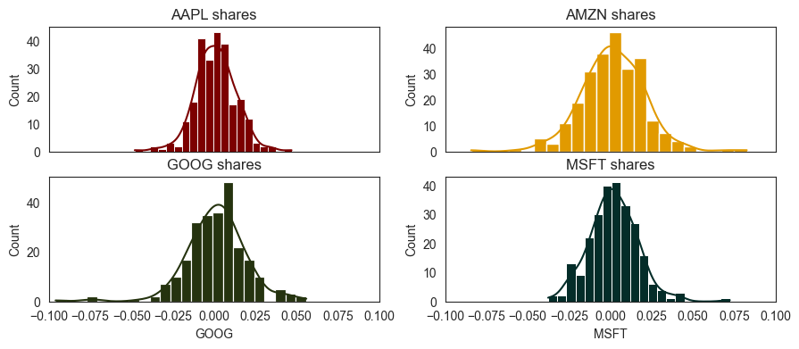
def VaR_historical(company):
alpha = [0.1, 0.05, 0.01]
current_price = all_close[company].sort_index(ascending=False).iloc[0]
var_historical = []
print(f'Stock: {company}')
print('VaR method: Historical')
print(f'Current price: ${current_price:.2f}')
print(f'Loss will not exceed:')
for i in alpha:
loss = all_returns[company].quantile(i)
nearest_higher = (
all_returns.loc[all_returns[company] < loss, company]
.sort_values(ascending=False)
.iloc[0]
)
print(f' * ${-nearest_higher*current_price:.2f} per share ({(1-i)*100:.0f}% confidence)')
var_historical.append({
'Confidence': f'{i*100:.0f}%',
'Loss%': loss,
'Nearest higher': nearest_higher
})
perc_95 = var_historical[1]['Loss%']
plt.figure(figsize=(10.5, 3))
sns.histplot(data=all_returns[company], color=company_colours[company], alpha=0.9, kde=True)
plt.axvline(x=perc_95, color='#564c4d', linewidth=1)
plt.annotate(f'VaR (95% confidence):\n {perc_95*100:.2f}%',
xy=(perc_95, 28), weight='bold', color='#232023',
xytext=(perc_95 - 0.045, 24), fontsize=10,
arrowprops=dict(arrowstyle="->", color='#808080'))
plt.xlim(left=-0.1, right=0.1)
plt.xlabel(f'{company} Returns')
plt.title(f'{company} Historical Value at Risk')
VaR_historical('AAPL')
Stock: AAPL
VaR method: Historical
Current price: $186.86
Loss will not exceed:
* $2.59 per share (90% confidence)
* $3.35 per share (95% confidence)
* $6.69 per share (99% confidence)
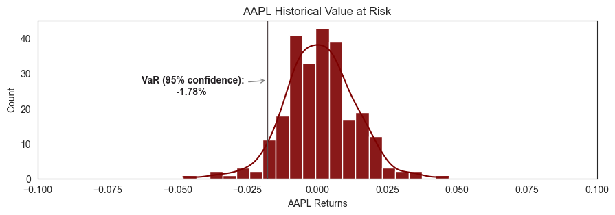
VaR_historical('AMZN')
Stock: AMZN
VaR method: Historical
Current price: $159.28
Loss will not exceed:
* $3.29 per share (90% confidence)
* $4.37 per share (95% confidence)
* $7.02 per share (99% confidence)
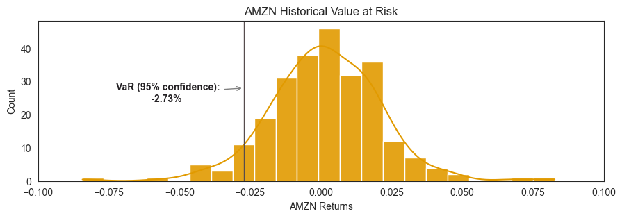
VaR_historical('MSFT')
Stock: MSFT
VaR method: Historical
Current price: $403.78
Loss will not exceed:
* $6.69 per share (90% confidence)
* $9.15 per share (95% confidence)
* $12.46 per share (99% confidence)
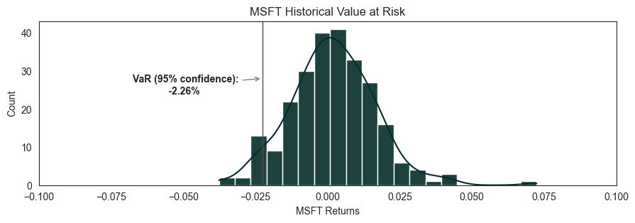
VaR_historical('GOOG')
Stock: GOOG
VaR method: Historical
Current price: $142.71
Loss will not exceed:
* $2.59 per share (90% confidence)
* $3.78 per share (95% confidence)
* $10.49 per share (99% confidence)
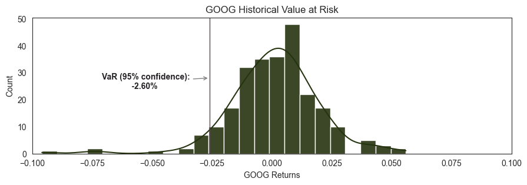
Parametric approach
The parametric Value at Risk (VaR) method, particularly the
Variance-Covariance approach, estimates the potential loss in
a financial portfolio by assuming that returns follow a normal
distribution. This method calculates VaR based on the standard
deviation and correlation of asset returns.
Its advantages include computational efficiency, requiring
only correlation and volatility matrices, and suitability for
linear assets. However, drawbacks arise due to its assumption
of normality, making it less accurate for non-linear
derivatives, options, and assets with skewed distributions.
Additionally, the method's accuracy diminishes over longer
time horizons, limiting its applicability. Despite these
limitations, the simplicity and speed of the parametric
approach make it a useful tool, especially for portfolios with
straightforward risk exposures.
def VaR_parametric(company):
alpha = [0.1, 0.05, 0.01]
current_price = all_close[company].sort_index(ascending=False).iloc[0]
var_parametric = []
print(f'Stock: {company}')
print('VaR method: Parametric')
print(f'Current price: ${current_price:.2f}')
print(f'Loss will not exceed:')
for i in alpha:
mean = np.mean(all_returns[company])
stdev = np.std(all_returns[company], axis=0)
z_score = norm.ppf(1 - i)
var = -z_score * stdev
print(f' * ${-var * current_price:.2f} per share ({(1-i)*100:.0f}% confidence)')
var_parametric.append({
'Confidence': f'{(1 - i) * 100:.0f}%',
'Loss%': var
})
VaR_parametric('AAPL')
Stock: AAPL
VaR method: Parametric
Current price: $186.86
Loss will not exceed:
* $2.99 per share (90% confidence)
* $3.84 per share (95% confidence)
* $5.43 per share (99% confidence)
VaR_parametric('AMZN')
Stock: AMZN
VaR method: Parametric
Current price: $159.28
Loss will not exceed:
* $3.98 per share (90% confidence)
* $5.11 per share (95% confidence)
* $7.22 per share (99% confidence)
VaR_parametric('MSFT')
Stock: MSFT
VaR method: Parametric
Current price: $403.78
Loss will not exceed:
* $7.63 per share (90% confidence)
* $9.79 per share (95% confidence)
* $13.84 per share (99% confidence)
VaR_parametric('GOOG')
Stock: GOOG
VaR method: Parametric
Current price: $142.71
Loss will not exceed:
* $3.39 per share (90% confidence)
* $4.36 per share (95% confidence)
* $6.16 per share (99% confidence)
Monte Carlo simulation approach
The Monte Carlo simulation approach estimates Value at Risk
(VaR) by simulating future stock prices through a loop that
generates random shocks and calculates drift for each day
based on historical returns. This method, distinct from
Historical Simulation, uses a lognormal distribution to
generate risk factor scenarios. It accurately prices both
linear and non-linear positions, providing a full distribution
of potential portfolio gains and losses.
This approach offers flexibility in specifying parameters,
effectively capturing non-normalities, and accommodating
diverse complex positions. However, it relies on assuming a
lognormal distribution, necessitates appropriate scenario
generation, and demands substantial computational resources.
- A random shock is generated using a normal distribution.
This represents the unpredictable component of stock price
movements.
- A drift is calculated based on the mean of daily returns.
The drift represents the average expected movement in the
stock price.
- The new stock price for the day is calculated using the
previous day's price, drift, and shock.
In essence, this function employs both a predictable component
(drift) and an unpredictable component (shock) to project
future stock prices over a specified timeframe, generating a
trajectory based on the given parameters.
def price_montecarlo(company, days):
initial_price = all_close[company].sort_index(ascending=True).iloc[0]
results = pd.DataFrame(columns=['Time', 'Simulated price', 'Drift', 'Shock'])
results.loc[0] = [0, initial_price, 0, 0]
mean = np.mean(all_returns[company])
stdev = np.std(all_returns[company], axis=0)
delta_t = 1 / days
for i in range(1, days):
results.loc[i, 'Time'] = i
results.loc[i, 'Drift'] = mean * delta_t
results.loc[i, 'Shock'] = np.random.normal(mean * delta_t, stdev * np.sqrt(delta_t))
results.loc[i, 'Simulated price'] = (
results['Simulated price'].iloc[i - 1] +
(results['Simulated price'].iloc[i - 1] *
(results['Drift'].iloc[i] + results['Shock'].iloc[i]))
)
return results
price_montecarlo('AMZN', 252)
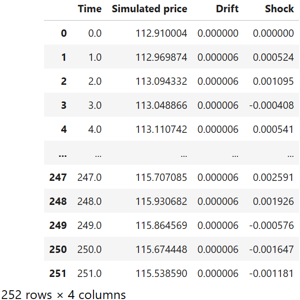
Next, we will be:
- Running the Monte Carlo simulation function for a larger
number of repetitions (e.g. 20 times).
- Simulating the future stock prices for each run of the
Monte Carlo simulation and storing the final stock price
from each simulation.
-
After completing all simulations, calculate the 1% / 5% /
10% quantile. This quantile represents a value below which
1% / 5% / 10% of the simulated stock prices fall.
company = 'AAPL'
days = 252
rep = 100
plt.figure(figsize=(10.5, 3))
for r in range(rep):
sns.lineplot(
data=price_montecarlo(company, days),
y='Simulated price',
x='Time'
)
plt.xlabel("Days")
plt.ylabel("Price")
plt.title(f'Monte Carlo simulation for {company} stock price, {rep} repetitions')
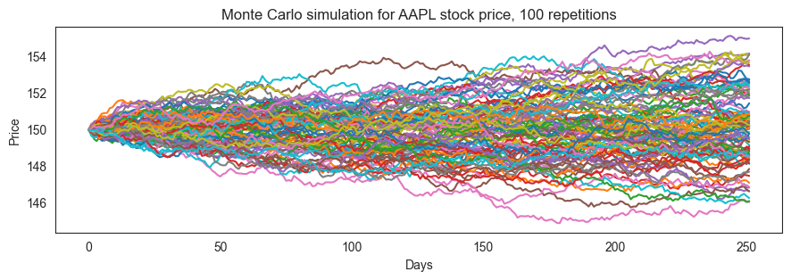
def VaR_montecarlo(company, days, rep):
sim_results = []
current_price = all_close['AAPL'].sort_index(ascending=False).iloc[0]
initial_price = all_close['AAPL'].sort_index(ascending=True).iloc[0]
for i in range(1, rep+1):
prediction = price_montecarlo('AAPL', days).iloc[-1]['Simulated price']
sim_results.append({
'Simulation': i,
'Prediction': prediction,
'Loss': current_price - prediction
})
sim_results_df = pd.DataFrame(sim_results)
alpha = [0.1, 0.05, 0.01]
print(f'Stock: {company}')
print('VaR method: Monte Carlo')
print(f'Current price: ${current_price:.2f}')
print(f'Loss will not exceed:')
for i in alpha:
cutoff = sim_results_df['Prediction'].quantile(i)
var = current_price - cutoff
print(f' * ${var:.2f} per share ({(1-i)*100:.0f}% confidence)')
plt.figure(figsize=(10.5, 3))
sns.histplot(
data=sim_results_df,
x='Loss',
color=company_colours[company],
alpha=1,
kde=True
)
plt.title(f'Monte Carlo simulation for {company} stock VaR, {rep} repetitions')
VaR_montecarlo('AAPL', 252, 2000)
Stock: AAPL
VaR method: Monte Carlo
Current price: $186.86
Loss will not exceed:
* $38.94 per share (90% confidence)
* $39.64 per share (95% confidence)
* $40.71 per share (99% confidence)
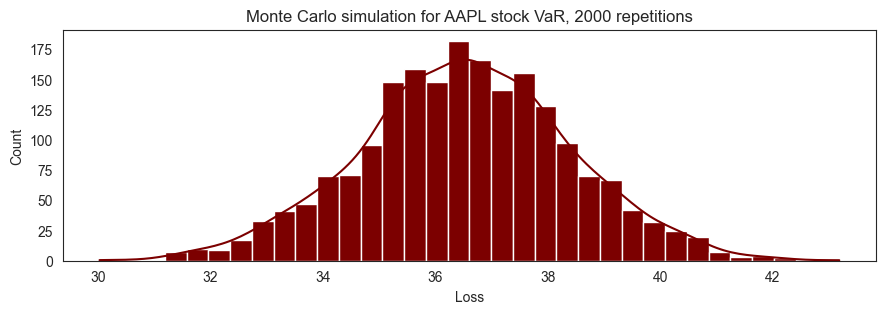
4. Recommendations for future
work
1. Weighted Moving Average Methods for VaR
computation
Unlike the VaR methods used in this project, which assume
uniform weights for all historical returns, weighted
approaches such as the Exponential Weighted Moving Average
Method (EWMA) assigns non-uniform weights, with a preference
for more recent returns. The most recent returns have higher
weights because they influence "today's" return more heavily
than returns further in the past. This method proves
advantageous in capturing varying influences of past returns
on the current risk assessment.
2. Include VaR backtesting
Various forms of backtesting could be used to assess and
enhance the reliability of VaR models. One suggested approach
is the Kupiec's proportion-of-failures (POF) test, which is a
simple and straihtforward statistical method that evaluates
the accuracy of VaR predictions.